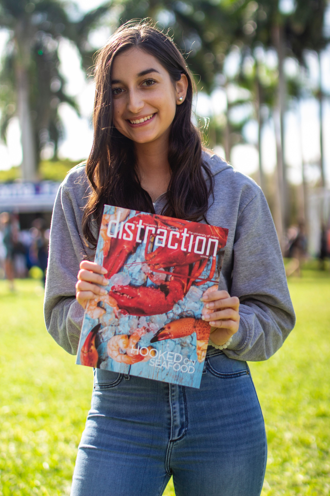

Gianna Sanchez
100 Nowhere Drive, Somewhere USA

ABOUT ME
I am a sophomore majoring in broadcast journalism and minoring in the music business and entertainment industry. I am the executive producer of UMTV NewsBreak, associate producer of UMTV SportsDesk, social media coordinator for UMTV and photo editor for Distraction magazine. I hope to one day pursue a career as an executive producer in live television.
EXPERIENCE
University of Miami Television
Executive Producer
NewsBreak 2018-Present
- Create 90 second social media news updates three times a week
- Create rundown in ENPS and edit scripts
- Coach talent on ways to improve
- Operate studio camera and prompters
- Edit VOs and final show on Adobe Premiere Pro and record on Grass Valley K2 Server
Associate Producer
SportsDesk 2018-Present
- Executive Producer trainee. Will take over as full EP in Fall ’19
- Create graphics and edit scripts using ENPS
- Assist in creating rundown for live 30-minute show
- Create packages using Canon DSLRs, Sony Z150. Edit on Adobe Premiere Pro
- Operate Grass Valley K2 Server for playback during live show
SKILLS
| Adobe Premiere Pro, |
Adobe Photoshop, |
Adobe InDesign, |
Canon DSLRs, |
| Grass Valley Server, |
Dejero Go Gox, |
Final Cut Pro, |
AP ENPS |
Education
University of Miami, 2017-2021
- B.S.C. Broadcast Journalism, Minor in Music Business Industry / GPA: 3.92